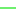

<!doctype html>
<html lang="en">
    <head>
        <meta charset="utf-8">
        <meta http-equiv="X-UA-Compatible" content="IE=edge">
        <meta name="viewport" content="initial-scale=1,user-scalable=no,maximum-scale=1,width=device-width">
        <meta name="mobile-web-app-capable" content="yes">
        <meta name="apple-mobile-web-app-capable" content="yes">
        <link rel="stylesheet" href="css/leaflet.css">
        <link rel="stylesheet" href="css/qgis2web.css"><link rel="stylesheet" href="css/fontawesome-all.min.css">
        <link rel="stylesheet" href="css/leaflet-measure.css">
        <style>
        html, body, #map {
            width: 100%;
            height: 100%;
            padding: 0;
            margin: 0;
        }
        </style>
        <title>Flux sortant des actifs pontacquais, 2018</title>
    </head>
    <body>
        <div id="map">
        </div>
        <script src="js/qgis2web_expressions.js"></script>
        <script src="js/leaflet.js"></script>
        <script src="js/leaflet.rotatedMarker.js"></script>
        <script src="js/leaflet.pattern.js"></script>
        <script src="js/leaflet-hash.js"></script>
        <script src="js/Autolinker.min.js"></script>
        <script src="js/rbush.min.js"></script>
        <script src="js/labelgun.min.js"></script>
        <script src="js/labels.js"></script>
        <script src="js/leaflet-measure.js"></script>
        <script src="data/Villesdestinations_1.js"></script>
        <script src="data/10actifsparjour_2.js"></script>
        <script src="data/10et90actifsparjour_3.js"></script>
        <script src="data/90actifsparjour_4.js"></script>
        <script>
        var highlightLayer;
        function highlightFeature(e) {
            highlightLayer = e.target;

            if (e.target.feature.geometry.type === 'LineString') {
              highlightLayer.setStyle({
                color: '#ffff00',
              });
            } else {
              highlightLayer.setStyle({
                fillColor: '#ffff00',
                fillOpacity: 1
              });
            }
        }
        var map = L.map('map', {
            zoomControl:true, maxZoom:28, minZoom:1
        }).fitBounds([[43.072815278982155,-0.2704443893891066],[43.34503289819941,0.10727243393322856]]);
        var hash = new L.Hash(map);
        map.attributionControl.setPrefix('<a href="https://github.com/tomchadwin/qgis2web" target="_blank">qgis2web</a> &middot; <a href="https://leafletjs.com" title="A JS library for interactive maps">Leaflet</a> &middot; <a href="https://qgis.org">QGIS</a>');
        var autolinker = new Autolinker({truncate: {length: 30, location: 'smart'}});
        var measureControl = new L.Control.Measure({
            position: 'topleft',
            primaryLengthUnit: 'meters',
            secondaryLengthUnit: 'kilometers',
            primaryAreaUnit: 'sqmeters',
            secondaryAreaUnit: 'hectares'
        });
        measureControl.addTo(map);
        document.getElementsByClassName('leaflet-control-measure-toggle')[0]
        .innerHTML = '';
        document.getElementsByClassName('leaflet-control-measure-toggle')[0]
        .className += ' fas fa-ruler';
        var bounds_group = new L.featureGroup([]);
        function setBounds() {
        }
        map.createPane('pane_CartoLight_0');
        map.getPane('pane_CartoLight_0').style.zIndex = 400;
        var layer_CartoLight_0 = L.tileLayer('https://a.basemaps.cartocdn.com/light_nolabels/{z}/{x}/{y}@2x.png', {
            pane: 'pane_CartoLight_0',
            opacity: 1.0,
            attribution: '',
            minZoom: 1,
            maxZoom: 28,
            minNativeZoom: 0,
            maxNativeZoom: 19
        });
        layer_CartoLight_0;
        map.addLayer(layer_CartoLight_0);
        function pop_Villesdestinations_1(feature, layer) {
            layer.on({
                mouseout: function(e) {
                    for (i in e.target._eventParents) {
                        e.target._eventParents[i].resetStyle(e.target);
                    }
                },
                mouseover: highlightFeature,
            });
            var popupContent = '<table>\
                    <tr>\
                        <th scope="row">Commune</th>\
                        <td>' + (feature.properties['Commune'] !== null ? autolinker.link(feature.properties['Commune'].toLocaleString()) : '') + '</td>\
                    </tr>\
                    <tr>\
                        <th scope="row">Population</th>\
                        <td>' + (feature.properties['Population'] !== null ? autolinker.link(feature.properties['Population'].toLocaleString()) : '') + '</td>\
                    </tr>\
                    <tr>\
                        <th scope="row">Départeme</th>\
                        <td>' + (feature.properties['Départeme'] !== null ? autolinker.link(feature.properties['Départeme'].toLocaleString()) : '') + '</td>\
                    </tr>\
                    <tr>\
                        <th scope="row">Région</th>\
                        <td>' + (feature.properties['Région'] !== null ? autolinker.link(feature.properties['Région'].toLocaleString()) : '') + '</td>\
                    </tr>\
                    <tr>\
                        <th scope="row">Actifs</th>\
                        <td>' + (feature.properties['Actifs'] !== null ? autolinker.link(feature.properties['Actifs'].toLocaleString()) : '') + '</td>\
                    </tr>\
                </table>';
            layer.bindPopup(popupContent, {maxHeight: 400});
        }

        function style_Villesdestinations_1_0() {
            return {
                pane: 'pane_Villesdestinations_1',
                opacity: 1,
                color: 'rgba(127,127,127,1.0)',
                dashArray: '',
                lineCap: 'butt',
                lineJoin: 'miter',
                weight: 1, 
                fill: true,
                fillOpacity: 1,
                fillColor: 'rgba(244,244,244,0.5019607843137255)',
                interactive: true,
            }
        }
        map.createPane('pane_Villesdestinations_1');
        map.getPane('pane_Villesdestinations_1').style.zIndex = 401;
        map.getPane('pane_Villesdestinations_1').style['mix-blend-mode'] = 'normal';
        var layer_Villesdestinations_1 = new L.geoJson(json_Villesdestinations_1, {
            attribution: '',
            interactive: true,
            dataVar: 'json_Villesdestinations_1',
            layerName: 'layer_Villesdestinations_1',
            pane: 'pane_Villesdestinations_1',
            onEachFeature: pop_Villesdestinations_1,
            style: style_Villesdestinations_1_0,
        });
        bounds_group.addLayer(layer_Villesdestinations_1);
        map.addLayer(layer_Villesdestinations_1);
        function pop_10actifsparjour_2(feature, layer) {
            layer.on({
                mouseout: function(e) {
                    for (i in e.target._eventParents) {
                        e.target._eventParents[i].resetStyle(e.target);
                    }
                },
                mouseover: highlightFeature,
            });
            var popupContent = '<table>\
                    <tr>\
                        <td colspan="2">' + (feature.properties['layer'] !== null ? autolinker.link(feature.properties['layer'].toLocaleString()) : '') + '</td>\
                    </tr>\
                    <tr>\
                        <td colspan="2">' + (feature.properties['path'] !== null ? autolinker.link(feature.properties['path'].toLocaleString()) : '') + '</td>\
                    </tr>\
                </table>';
            layer.bindPopup(popupContent, {maxHeight: 400});
        }

        function style_10actifsparjour_2_0() {
            return {
                pane: 'pane_10actifsparjour_2',
                opacity: 1,
                color: 'rgba(0,228,0,1.0)',
                dashArray: '',
                lineCap: 'square',
                lineJoin: 'bevel',
                weight: 1.0,
                fillOpacity: 0,
                interactive: false,
            }
        }
        map.createPane('pane_10actifsparjour_2');
        map.getPane('pane_10actifsparjour_2').style.zIndex = 402;
        map.getPane('pane_10actifsparjour_2').style['mix-blend-mode'] = 'normal';
        var layer_10actifsparjour_2 = new L.geoJson(json_10actifsparjour_2, {
            attribution: '',
            interactive: false,
            dataVar: 'json_10actifsparjour_2',
            layerName: 'layer_10actifsparjour_2',
            pane: 'pane_10actifsparjour_2',
            onEachFeature: pop_10actifsparjour_2,
            style: style_10actifsparjour_2_0,
        });
        bounds_group.addLayer(layer_10actifsparjour_2);
        map.addLayer(layer_10actifsparjour_2);
        function pop_10et90actifsparjour_3(feature, layer) {
            layer.on({
                mouseout: function(e) {
                    for (i in e.target._eventParents) {
                        e.target._eventParents[i].resetStyle(e.target);
                    }
                },
                mouseover: highlightFeature,
            });
            var popupContent = '<table>\
                    <tr>\
                        <td colspan="2">' + (feature.properties['layer'] !== null ? autolinker.link(feature.properties['layer'].toLocaleString()) : '') + '</td>\
                    </tr>\
                    <tr>\
                        <td colspan="2">' + (feature.properties['path'] !== null ? autolinker.link(feature.properties['path'].toLocaleString()) : '') + '</td>\
                    </tr>\
                </table>';
            layer.bindPopup(popupContent, {maxHeight: 400});
        }

        function style_10et90actifsparjour_3_0() {
            return {
                pane: 'pane_10et90actifsparjour_3',
                opacity: 1,
                color: 'rgba(255,183,0,1.0)',
                dashArray: '',
                lineCap: 'square',
                lineJoin: 'bevel',
                weight: 2.0,
                fillOpacity: 0,
                interactive: false,
            }
        }
        map.createPane('pane_10et90actifsparjour_3');
        map.getPane('pane_10et90actifsparjour_3').style.zIndex = 403;
        map.getPane('pane_10et90actifsparjour_3').style['mix-blend-mode'] = 'normal';
        var layer_10et90actifsparjour_3 = new L.geoJson(json_10et90actifsparjour_3, {
            attribution: '',
            interactive: false,
            dataVar: 'json_10et90actifsparjour_3',
            layerName: 'layer_10et90actifsparjour_3',
            pane: 'pane_10et90actifsparjour_3',
            onEachFeature: pop_10et90actifsparjour_3,
            style: style_10et90actifsparjour_3_0,
        });
        bounds_group.addLayer(layer_10et90actifsparjour_3);
        map.addLayer(layer_10et90actifsparjour_3);
        function pop_90actifsparjour_4(feature, layer) {
            layer.on({
                mouseout: function(e) {
                    for (i in e.target._eventParents) {
                        e.target._eventParents[i].resetStyle(e.target);
                    }
                },
                mouseover: highlightFeature,
            });
            var popupContent = '<table>\
                    <tr>\
                        <td colspan="2">' + (feature.properties['fid'] !== null ? autolinker.link(feature.properties['fid'].toLocaleString()) : '') + '</td>\
                    </tr>\
                    <tr>\
                        <td colspan="2">' + (feature.properties['layer'] !== null ? autolinker.link(feature.properties['layer'].toLocaleString()) : '') + '</td>\
                    </tr>\
                    <tr>\
                        <td colspan="2">' + (feature.properties['path'] !== null ? autolinker.link(feature.properties['path'].toLocaleString()) : '') + '</td>\
                    </tr>\
                </table>';
            layer.bindPopup(popupContent, {maxHeight: 400});
        }

        function style_90actifsparjour_4_0() {
            return {
                pane: 'pane_90actifsparjour_4',
                opacity: 1,
                color: 'rgba(255,35,35,1.0)',
                dashArray: '',
                lineCap: 'square',
                lineJoin: 'bevel',
                weight: 4.0,
                fillOpacity: 0,
                interactive: false,
            }
        }
        map.createPane('pane_90actifsparjour_4');
        map.getPane('pane_90actifsparjour_4').style.zIndex = 404;
        map.getPane('pane_90actifsparjour_4').style['mix-blend-mode'] = 'normal';
        var layer_90actifsparjour_4 = new L.geoJson(json_90actifsparjour_4, {
            attribution: '',
            interactive: false,
            dataVar: 'json_90actifsparjour_4',
            layerName: 'layer_90actifsparjour_4',
            pane: 'pane_90actifsparjour_4',
            onEachFeature: pop_90actifsparjour_4,
            style: style_90actifsparjour_4_0,
        });
        bounds_group.addLayer(layer_90actifsparjour_4);
        map.addLayer(layer_90actifsparjour_4);
        map.createPane('pane_Labels_5');
        map.getPane('pane_Labels_5').style.zIndex = 405;
        var layer_Labels_5 = L.tileLayer('https://a.basemaps.cartocdn.com/rastertiles/voyager_only_labels/{z}/{x}/{y}.png', {
            pane: 'pane_Labels_5',
            opacity: 1.0,
            attribution: '<a href="https://cartodb.com/basemaps/">Map tiles by CartoDB, under CC BY 3.0. Data by OpenStreetMap, under ODbL.</a>',
            minZoom: 1,
            maxZoom: 28,
            minNativeZoom: 0,
            maxNativeZoom: 20
        });
        layer_Labels_5;
        map.addLayer(layer_Labels_5);
            var title = new L.Control();
            title.onAdd = function (map) {
                this._div = L.DomUtil.create('div', 'info');
                this.update();
                return this._div;
            };
            title.update = function () {
                this._div.innerHTML = '<h2>Flux sortant des actifs pontacquais, 2018</h2>';
            };
            title.addTo(map);
        var baseMaps = {};
        L.control.layers(baseMaps,{"Labels": layer_Labels_5,' > 90 actifs par jour': layer_90actifsparjour_4,' > 10 et < 90 actifs par jour': layer_10et90actifsparjour_3,' < 10 actifs par jour': layer_10actifsparjour_2,' Villes destinations': layer_Villesdestinations_1,"Carto Light": layer_CartoLight_0,}).addTo(map);
        setBounds();
        </script>
    </body>
</html>
